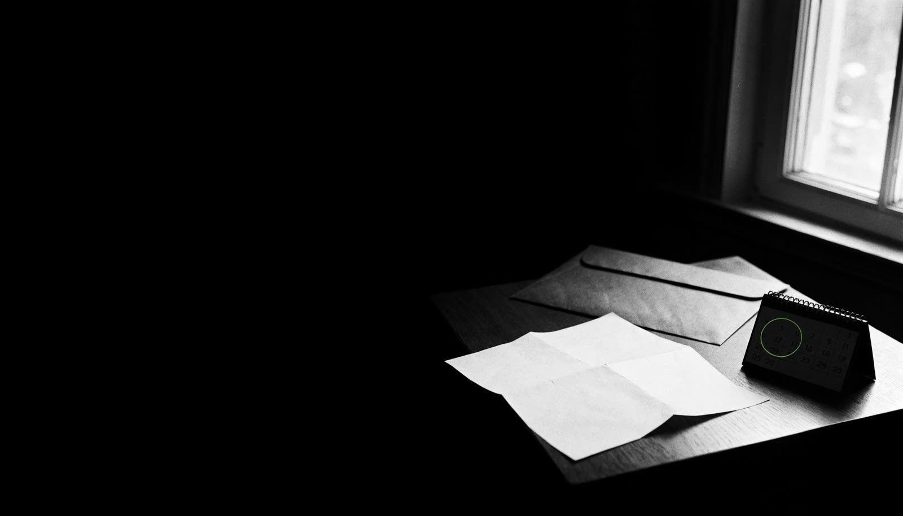
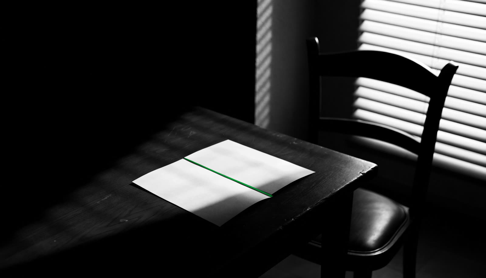

Nakaz zapłaty: jak wnieść sprzeciw
Nakaz zapłaty sąd wydaje bez rozprawy, na podstawie samego pozwu. Na sprzeciw masz 2 tygodnie od doręczenia nakazu (art. 480² § 2 k.p.c.). Po wniesieniu sprzeciwu nakaz traci moc w zaskarżonej części, a sprawa toczy się dalej przed sądem. W sprzeciwie warto od razu podać zarzuty, fakty i dowody.
- Termin: 2 tygodnie od doręczenia nakazu zapłaty w postępowaniu upominawczym (art. 480² § 2 k.p.c.).
- W sprzeciwie wskaż, czy zaskarżasz nakaz w całości czy w części, przedstaw zarzuty (art. 480³ § 2 k.p.c.), a także fakty i dowody.
- Nakaz z postępowania nakazowego (np. z weksla) zaskarża się zarzutami, nie sprzeciwem; to inne zasady i opłata.
- Przedawnienie roszczenia to częsty i ważny zarzut; podnieś go w sprzeciwie.
Jaki nakaz dostałeś
| Rodzaj | Jak się bronić | Termin |
|---|---|---|
| Nakaz w postępowaniu upominawczym (najczęstszy) | Sprzeciw | 2 tygodnie |
| Nakaz z elektronicznego postępowania upominawczego (e-sąd) | Sprzeciw, także elektronicznie | 2 tygodnie |
| Nakaz w postępowaniu nakazowym (np. weksel, uznanie długu) | Zarzuty od nakazu | 2 tygodnie |
Rodzaj postępowania jest wpisany w nagłówku nakazu. Pouczenie dołączone do nakazu wskazuje, jaki środek przysługuje.
Co musi zawierać sprzeciw
- Oznaczenie sądu i sygnatury z nakazu.
- Strony: powód (wierzyciel) i pozwany (Ty).
- Zakres: czy zaskarżasz nakaz w całości, czy w części.
- Zarzuty: np. przedawnienie, zapłata, brak umowy, zawyżona kwota, brak legitymacji wierzyciela.
- Fakty i dowody: potwierdzenia przelewów, korespondencja, umowy, wnioski o świadków.
- Podpis i odpis sprzeciwu dla powoda.
Niektóre zarzuty trzeba zgłosić przed wdaniem się w spór co do istoty sprawy, pod rygorem ich utraty (art. 4803 § 2 k.p.c.). Dlatego sprzeciw to moment, w którym warto przedstawić pełne stanowisko.
Sprzeciw w e-sądzie
Od nakazu wydanego w elektronicznym postępowaniu upominawczym sprzeciw nie wymaga uzasadnienia. Po jego wniesieniu nakaz traci moc w zaskarżonej części, a sąd umarza postępowanie (art. 50536 k.p.c.). Powód może w ciągu 3 miesięcy wnieść pozew o to samo roszczenie w zwykłym trybie i zachować skutki wniesienia pozwu w e-sądzie, np. dla przedawnienia (art. 50537 § 2 k.p.c.).
Najczęstszy zarzut: przedawnienie
Podstawowy termin przedawnienia roszczeń majątkowych wynosi 6 lat, a dla roszczeń o świadczenia okresowe i związanych z działalnością gospodarczą 3 lata (art. 118 k.c.). Koniec terminu przypada na ostatni dzień roku kalendarzowego, chyba że termin jest krótszy niż dwa lata.
Wobec konsumenta sąd bierze przedawnienie pod uwagę z urzędu. Mimo to warto wyraźnie podnieść ten zarzut w sprzeciwie i wskazać daty.
Wzór sprzeciwu od nakazu zapłaty
……………, dnia …………… r.
Sąd Rejonowy w ……………
…… Wydział Cywilny
Sygn. akt: ……………
Powód: ……………
Pozwany: …………… [imię, nazwisko, adres, PESEL]
SPRZECIW OD NAKAZU ZAPŁATY
Zaskarżam w całości [albo: w części co do kwoty …… zł] nakaz zapłaty wydany w postępowaniu upominawczym przez Sąd Rejonowy w …………… w dniu …………… , sygn. akt …………… , doręczony mi w dniu …………… . Wnoszę o oddalenie powództwa [w całości / w części] i zasądzenie od powoda kosztów postępowania.
Zarzuty i uzasadnienie: …………… [np. przedawnienie roszczenia, zapłata, brak umowy], dowody: …………… .
……………………………
(podpis)
Załączniki: odpis sprzeciwu dla powoda, dowody.
Najczęstsze błędy
- Sprzeciw bez zarzutów w zwykłym postępowaniu upominawczym. Część zarzutów przepada, jeśli nie zgłosisz ich od razu, a późniejsze zgłaszanie twierdzeń i dowodów może być utrudnione.
- Liczenie terminu od daty na nakazie, a nie od daty doręczenia.
- Brak odpisu dla powoda lub brak podpisu; to braki, które sąd wezwie do uzupełnienia, ale lepiej ich uniknąć.
- Pomylenie sprzeciwu z zarzutami przy nakazie w postępowaniu nakazowym.
Po wniesieniu sprzeciwu
Prawidłowo wniesiony sprzeciw powoduje, że nakaz zapłaty traci moc w zaskarżonej części (art. 505 § 2 k.p.c.). Sąd kieruje sprawę do dalszego rozpoznania. Powód może odpowiedzieć na sprzeciw, a sąd wyznacza rozprawę albo rozpoznaje sprawę na posiedzeniu niejawnym.
Podobną nazwę ma sprzeciw od wyroku nakazowego w sprawach karnych i wykroczeniowych, ale rządzą nim inne przepisy i terminy. Więcej w tekście Wyrok nakazowy: co to jest.
Najczęstsze pytania
Czy sprzeciw od nakazu zapłaty jest płatny?
Co jeśli nie odebrałem nakazu?
Czy dług może być przedawniony?
Czy po sprzeciwie muszę chodzić do sądu?
Artykuł ma charakter informacyjny i opisuje stan prawny na dzień aktualizacji. Nie zastępuje porady prawnej w konkretnej sprawie. Tekst przygotowano z pomocą narzędzi AI i sprawdzono merytorycznie przed publikacją.
Przeczytaj też

Wyrok nakazowy: co to jest i co zrobić w ciągu 7 dniSąd wydał wyrok bez rozprawy i przysłał go pocztą. Wyjaśniamy, co to oznacza, ile masz czasu i jakie masz możliwości.Czytaj →
Wezwanie na policję jako podejrzany: jak się przygotowaćCzy musisz stawić się na wezwanie, co zdarzy się na komendzie i jakie masz prawa jako podejrzany. Lista kroków przed przesłuchaniem.Czytaj →